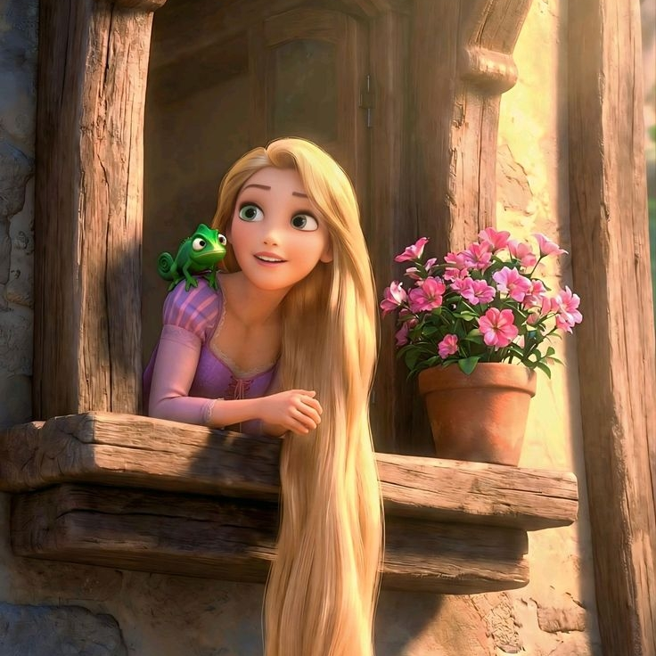
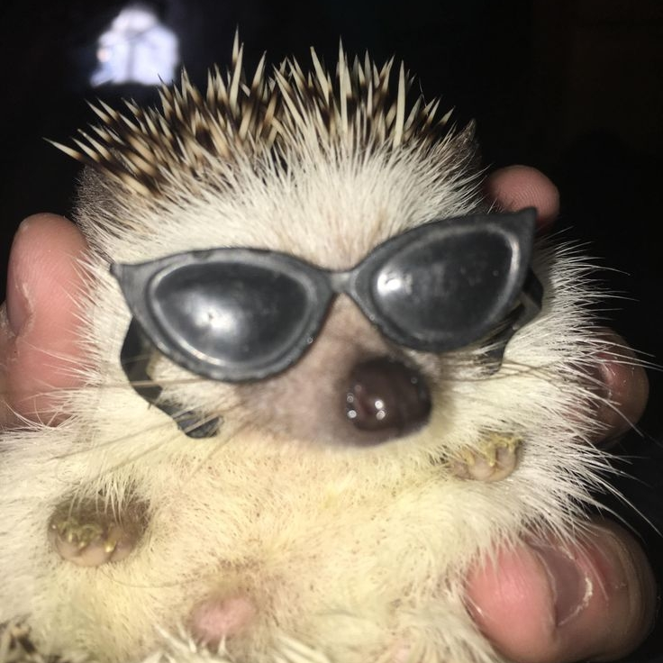
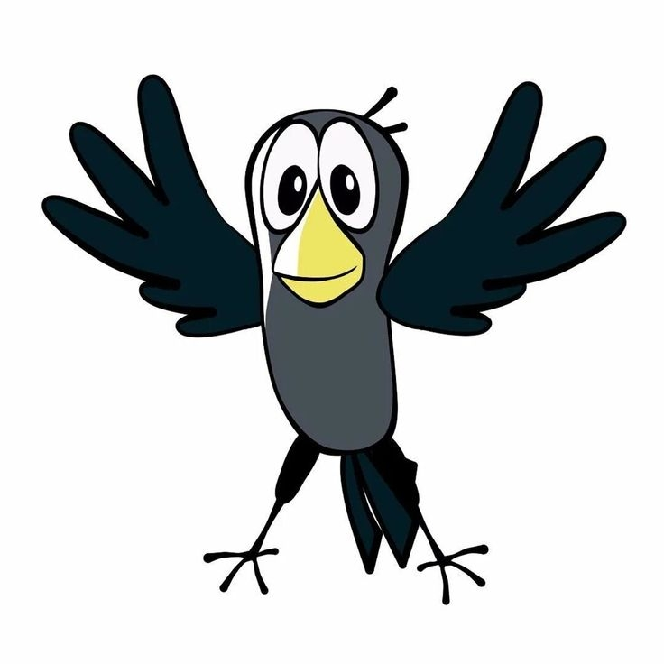
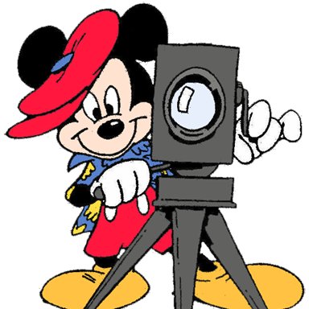

Мои друзья
У меня есть очень хорошие друзья, с которыми мне нравится общаться и проводить время. С ними я познакомилась в разных местах и ситуациях, каждый из них по своему уникален и интересен. Они делают мою жизнь насыщенней и теплее.
Мы всегда поддерживаем связь, даже если поступили в другие города, далеко друг от друга. Готовы поддержать в трудную минуту с любой проблемой, даже самой незначительной. Я ценю дружбу с каждым из них, каждый для меня особо дорог.
Фотографии моих друзей




Имена моих друзей
- Екатерина
- Мастер спорта по прыжкам на акробатической дорожке;
- Любит мармелад Haribo;
- Не знает английский язык;
- Поступила в Санкт-Петербургский горный университет императрицы Екатерины II;
- Умеет ходить на руках.
- Анастасия
- Ловила краба на Камчатке;
- Есть собственная квартира;
- Занималась метание молота;
- Была на вулкане.
- Александр
- Мастер спорта по карате-кумитэ;
- Умеет готовить;
- Интересуется MMA;
- Есть младший брат;
- Закончил школу с серебряной медалью.
- Михаил
- Умеет делать сальто назад;
- Есть машина;
- Победил в конкурсе и получил приз арбуз;
- Поступил в Саратовскую государственную юридическую академию.
- Виктория
- Учиться в медицинском колледже;
- Имеет квалификацию парикмахера;
- Любит Coca-Cola;
- Занималась русскими народными танцами.
- Айхан
- Читает много книг;
- Любит фильмы и сериалы;
- Изучает разные языки;
- Умеет красиво фотографировать;
- Во всём замечает эстетику.